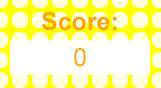
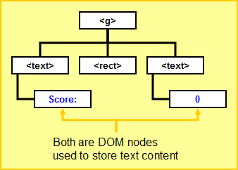
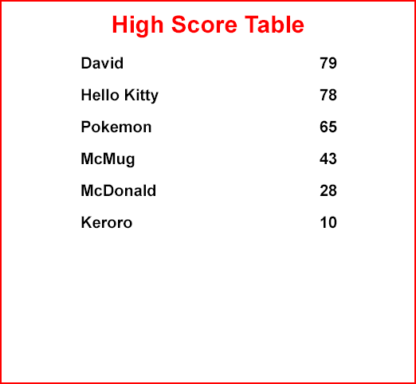
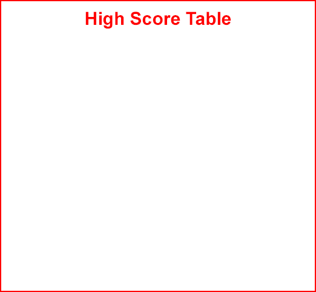

var score = 0; // The score of the game
<g transform="translate(640, 120)">
<text x="70" y="0"
style="fill:orange;font-size:25px;font-weight:bold;text-anchor:middle">
Score:
</text>
<rect x="0" y="10" width="140" height="35" style="fill:white" />
<text id="score" x="70" y="36"
style="fill:orange;font-size:25px;text-anchor:middle">0</text>
</g>

svgdoc.getElementById("score").firstChild.data = ...the updated score...;

<head>
. . .
<script language="JavaScript" src="highscore.js"></script>
</head>
name of the player~score of the player

| Cookie | Value |
|---|---|
| player0 | "David~79" |
| player1 | "Hello Kitty~78" |
| player2 | "Pokemon~65" |
| player3 | "McMug~43" |
| player4 | "McDonald~28" |
| player5 | "Keroro~10" |
| player6 | Empty or does not exist |
| player7 | Empty or does not exist |
| player8 | Empty or does not exist |
| player9 | Empty or does not exist |
function ScoreRecord(name, score) {
this.name = name;
this.score = score;
}
// Initialize an empty array to store the high score table
var table = new Array();
for (var i = 0; i < 10; i++) {
// Construct the cookie name
. . .
// Get the cookie value using the cookie name
. . .
// If the cookie does not exist exit from the for loop
. . .
// Extract the name and score of the player from the cookie value
. . .
// Add a new score record at the end of the array
table.push(new ScoreRecord(...name of the player..., ...score of the player...));
}
var record = ScoreRecord(...name of the current player..., ...score of the current player...);
table.splice(2, 0, record);
for (var i = 0; i < 10; i++) {
// If i is more than the length of the table exit from the for loop
. . .
// Construct the cookie name
. . .
// Store the ith record as a cookie using the cookie name
. . .
}
<g id="highscoretable" transform="translate(40,40)">
<rect width="520" height="480"
style="fill:white;stroke:red;stroke-width:2"/>
<text x="260" y="40"
style="fill:red;font-size:30px;font-weight:bold;text-anchor:middle">
High Score Table
</text>
<text id="highscoretext" y="45"
style="font-size: 20px;font-weight:bold"/>
</g>

<tspan x="100" dy="40">...name of the player...</tspan> <tspan x="400">...score of the player...</tspan>